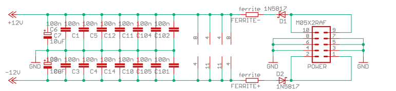

Einleitung
Hallo, heute möchte ich Ihnen das Grundwissen über den Selbstbau Ihrer eigenen Synthesizermodule vermitteln – diese benötigen nicht den Eurorack-Standard, obwohl sie in meinem Fall dazugehören.
Wenn Sie mit eurorack format oder einem anderen modularen Synthesizer-Standard beginnen, insbesondere aber mit dem Eurorack-Standard, werden Sie höchstwahrscheinlich von die schiere Anzahl der Hersteller und verfügbaren Produkte überwältigt sein. Einen einfachen Überblick erhalten Sie hier auf ModularGrid. Sie brauchen ein paar Wochen oder sogar Monate, um sich durch einige Testberichte auf Amzona.de zu lesen oder Synthesizer-Läden wie SchneidersLaden besuchen, um sich einen groben Überblick über die Vielfalt des Marktes zu verschaffen.
Warum Selbstbau?
Aber warum in aller Welt sollte man sich für den Selbstbau entscheiden und Module selbst bauen, wenn es doch bereits so viele Optionen mit fertig montierten Modulen zu einem guten Preis gibt Module selbst zu bauen? Dafür kann es mehrere Gründe geben: - Selbstbau ist billiger als fertig erhältliche Module, obwohl dies debattierbar ist, da man hohe Anfangskosten für Werkzeuge und Material hat. - Selbermachen ist interessant, weil man viel darüber lernt, wie die Module funktionieren, wie Elektronik im Allgemeinen funktioniert, und mit der Zeit wird man schließlich besser darin, Fehler zu erkennen und zu beheben.
Es lohnt sich auf jeden Fall, wenn man ein Hobby wie Elektronik in Betracht ziehen möchte, und ich persönlich denke, dass ein modularer Synthesizer der beste Weg ist, um als Hobby mit Elektronik und Audioschaltungen in Kontakt zu kommen.
Als Nächstes werden wir kurz besprechen, welche Werkzeuge, Komponenten und Verbrauchsmaterialien Sie benötigen, um mit diesem Hobby zu beginnen. Nur kurz, da dies auf verschiedene Arten und Weisen im Internet unter NorthCoastSynthesis diskutiert wird. Außerdem werde ich den Umfang auf Module beschränken, nicht auf Gehäuse und Netzteile, da dies ein ganz anderes Thema ist, und außerdem sollten Sie niemals ein eigenes Netzteil bauen, wenn Sie nicht wissen, was Sie tun. Halten Sie sich vom Stromnetz fern!!
Ausrüstung
Hier ist eine Liste der Werkzeuge, die Sie auf jeden Fall als Grundausstattung benötigen:
-
eine Lötstation und Lötmaterialien
-
ein Digitalmultimeter oder Multimeter zum Messen von Widerständen, Spannungen und Strömen
-
eine dritte Hand (die das Löten erleichtert)
-
ein Seitenschneider/Drahtschneider
-
eine Elektronikzange
-
Als Lot für THT (Durchsteckmontage, womit Sie beginnen sollten) sollten Sie bleifreies Lot mit einem Durchmesser von 1 mm bestellen
-
Einen gut beleuchteten Arbeitsplatz
-
Je nach Werkbank eine Lötunterlage, um zu verhindern, dass Ihre Werkbank verbrannt wird!
-
Dies sind die absoluten Grundlagen (das Digitalmultimeter könnte man theoretisch weglassen, aber es nützt einem nichts, da es billig ist und man es für grundlegende Tests benötigt) Und ich wette, ich habe noch etwas vergessen.
Wenn Sie in die Welt der SMD-/SMT-Technologie einsteigen möchten (wir wollen hier nur die Größe 0805 verwenden/ beschreiben), benötigen Sie zusätzlich:
-
als Lot für SMD-Löten bleifreies Lot mit einem Durchmesser von 0,3 mm
-
Pinzette
-
und optional eine Lupe, aber wie gesagt, diese sind optional (z. B. habe ich sie noch nicht benötigt, da 0805 relativ groß ist)
Testen des Moduls
Das war es soweit zum Bau, aber man braucht auch etwas Ausrüstung zum Testen. Es ist sinnvoll, das Modul zunächst in einem separaten Rack mit separater Stromversorgung zu testen, bevor man es in das Eurorack-Gehäuse einbaut und im Falle einer Fehlfunktion andere Module beschädigt. Hier macht ein kleiner Pod absolut Sinn 4ms pod32.
Außerdem benötigen Sie wahrscheinlich eine Eingangsquelle für Ihr Modul wie CV-, Audio- oder Gate-Signale. Verwenden Sie aus diesem Grund einen einfachen Oszillator (CV, Audio) oder Sequenzer (Gate): Hier kommen Erica Synth Pico VCO oder Erica Synth Pico VCO2 in den Sinn.
Außerdem benötigen Sie ein Ausgangsmodul. Eigentlich können Sie mit diesem Bausatz wirklich anfangen, es ist ein einfacher Verstärker mit eingebautem Lautsprecher CLACKTRONICS - MINI SPEAKER KIT
Verpolungsschutz
In diesem Zusammenhang möchte ich Sie auch daran erinnern, bei Ihren Konstruktionen immer Verpolungsschutzdioden zu verwenden. Verwenden Sie hierfür 1N5817 (THT) oder MBR0540T1 (SMD). Ich konnte kein Bild finden, also habe ich es von einigen Befaco-Schaltplänen kopiert. Seien Sie also gnädig mit mir und ignorieren Sie die 100-nF-Kondensatoren.

Dieses Bild mag für Sie noch keinen Sinn ergeben, aber das wird sich ändern, sobald Sie lernen, Elektronikschaltpläne zu lesen (was Sie tun sollten, wenn Sie dieses Hobby in Betracht ziehen).
Einige Hersteller und Module für den Anfang
Kommen wir nun zum Kern dieses Blog-Beitrags: Welche Hersteller und Module sollten Sie als Anfänger in Betracht ziehen?
Ich persönlich habe meine Reise mit der gut dokumentierten erica synths edu series begonnen, dann ein paar befaco modules (auch gut dokumentiert, auch etwas billiger bei exploding shed, was die Versandkosten betrifft ) und dann Module von NonlinearCircuits (NLC) (ebenso gut dokumentiert), aber es gibt keinen besonderen Grund, sie in dieser Reihenfolge zu machen.
Fazit und Links
Zusammenfassend lässt sich sagen, dass die Welt der Eurorack-Synthesizer und -Module ein lohnendes (wenn auch geldaufwendiges) Unterfangen ist, bei dem man unbedingt mitmachen sollte, wenn man das Bedürfnis oder den Drang dazu verspüren.
Zu guter Letzt noch ein paar Links, damit Sie wissen, wo Sie nach Inspiration und DIY-Kits suchen können:
exploding Shed, ein Unternehmen mit Sitz in Leipzig, Deutschland
3U Shop, mit Sitz in Petershagen bei Berlin, Deutschland
Synthesizer – So funktioniert elektronische Klangerzeugung von Florian Anwander Das Buch, das mich zu diesem Hobby gebracht hat [Deutsch]
Also, verbreitet den Sound!
(Noch zu tun: einige Bilder hinzufügen.)